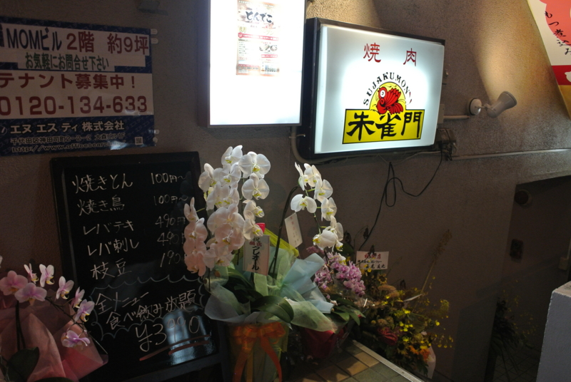
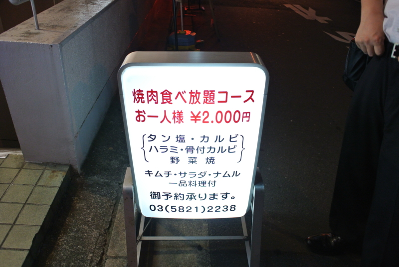
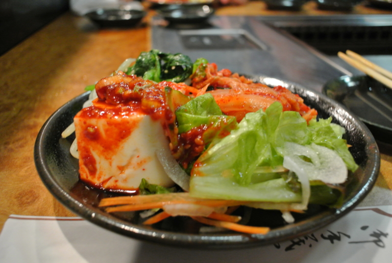
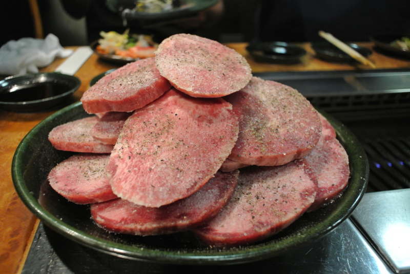
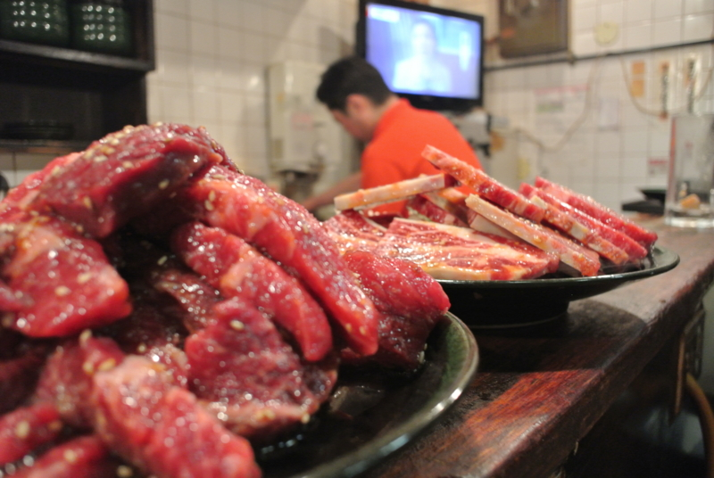

盛るぜぇ～超盛るぜぇ～
公開日：

ひょんなことから面識のない人に誘われて、秋葉原で焼き肉食うことになった。 Twitter 怖い。今回お邪魔したのは「朱雀門」。2,000円でおなかいっぱい食べられる、とってもリーズナブルなお店だ。

油断してるとガシガシお皿が出てくるので、うまく机を片付けながらお肉を焼く、食う、焼く、食う。そんなに大食漢ではないので、ちょっと辛かった……

キムチ・サラダ・ナムルが結構気に入ったので、自分で行くならお肉減らしてサイドメニューを増やしてもらうかな？ ちょっと狭いお店なので、4人ぐらい＆前もって予約で行くのがおすすめみたい。
帰りはギネスを一杯。現場の人の濃いお話が聞けたので満足でした。